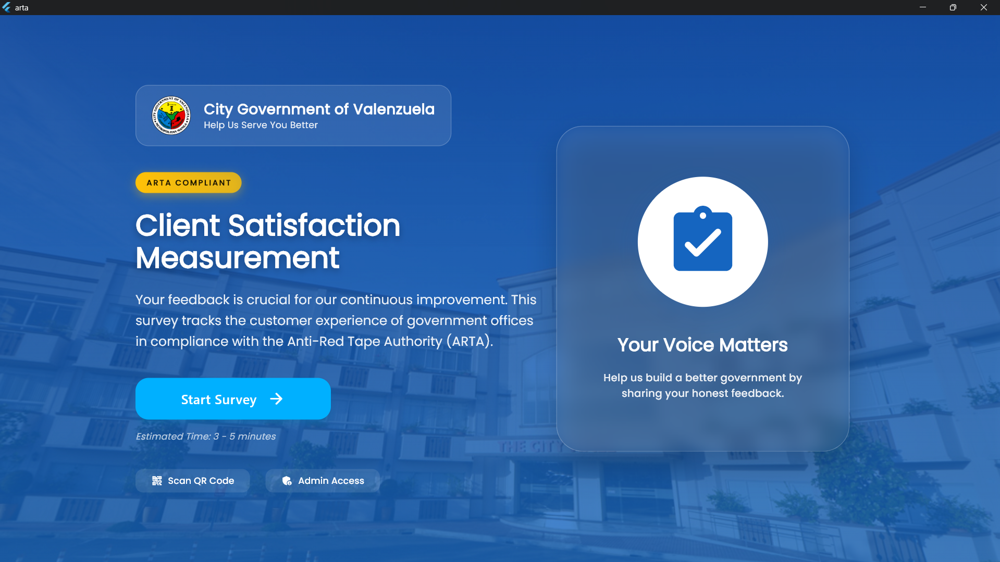
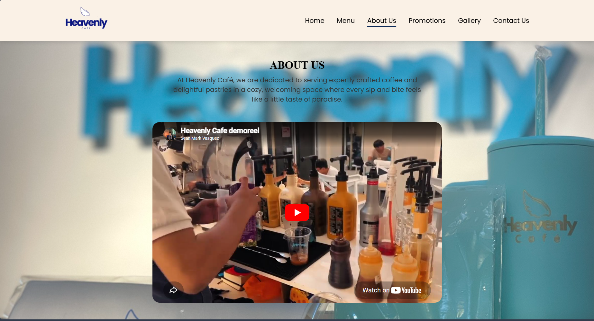
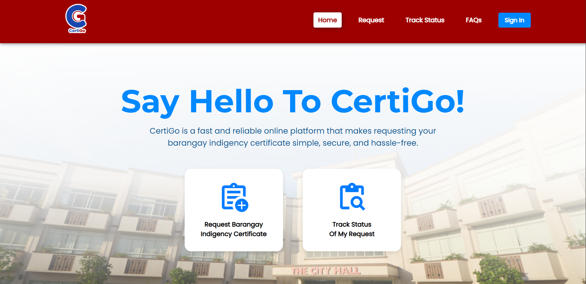
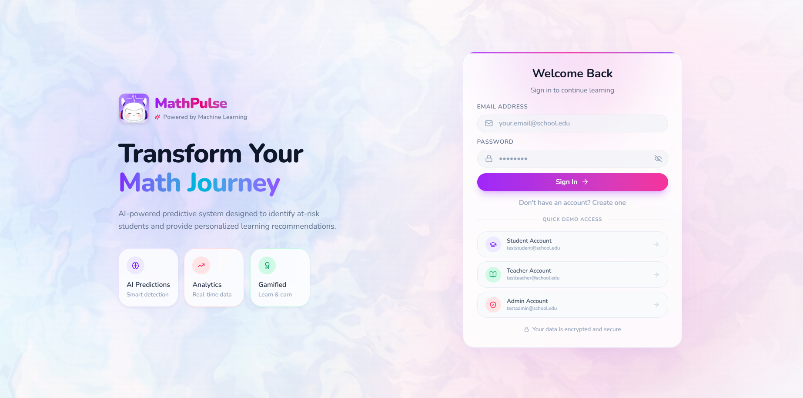

Sean Mark Vasquez
IT Generalist
Highly adaptable IT generalist with a proven ability to pivot seamlessly across the entire software development life cycle. Experience spans project management, comprehensive system architecture, responsive frontend engineering, and quality assurance. Thrives in dynamic environments, stepping into critical roles to drive complex digital platforms from initial requirements gathering to final deployment.
University Projects

Valenzuela City Smart Feedback System
An automated, ARTA compliant survey platform featuring an offline first architecture designed to guarantee uninterrupted data collection for citizen evaluation of public services.
See more...
Heavenly Cafe
A responsive web application designed to elevate the digital storefront of a local cafe, providing customers with an accessible online menu, photo galleries, and promotional updates.
See more...
CertiGo
A digital platform that modernizes local community services for Barangay Balangkas by enabling residents to request indigency certificates online.
See more...
Mathpulse AI
A predictive recommender system designed to identify at-risk mathematics students across all Senior High School strands for General Tiburcio De Leon National High School and deliver data-driven, personalized learning interventions.
See more...Tech Stack
Get In Touch
I am actively seeking internship opportunities!
Primary Email
vasquezseanmark.29@gmail.comUniversity Email
seanmarkvasquez@plv.edu.phLocation
Valenzuela City, Philippines